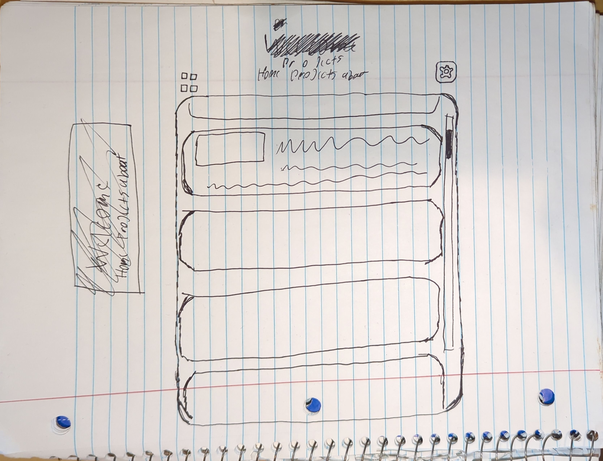
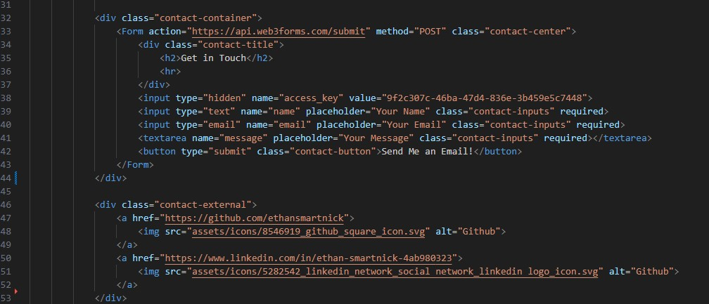
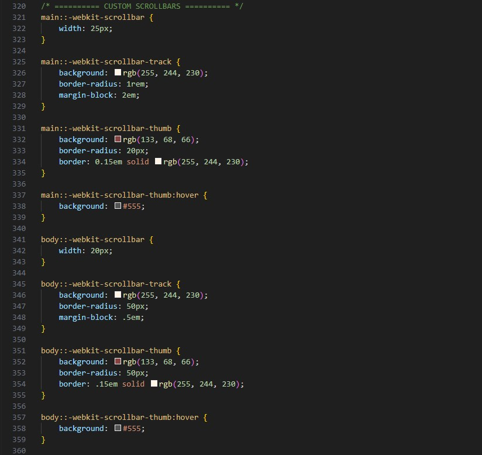

Concept
First of all, I don’t know about you, but I absolutely despise the way modern website UIs are designed. It feels like developers just keep stacking on new ideas without ever stepping back to consider efficiency or ease of use for the actual users.
That little tangent brings me to the concept behind this static website you’re currently viewing. I wanted it to be simple, sleek, and straight to the point. No login credentials with 14 different AI training CAPTCHAs when you forget your password. No glitchy, over-animated JavaScript that requires a quantum computer to load. No ad banners hogging 2,073,601 pixels out of the 2,073,600 allotted to your 1080p display. Just words on a screen using some basic HTML and CSS (maybe some JavaScript down the line) that your eyeballs can easily convert into neuron firing information.
Inspiration
My main source of inspiration actually came from a blog template built with Astro. What is Astro, you may ask? Well, in their own words, “Astro is a JavaScript web framework optimized for building fast, content-driven websites.” Originally, I planned to use Astro’s framework for my website, but I decided against it. In this specific case, I don’t plan on having any backend, so it felt unnecessary. I wanted to keep things simple, and Astro’s structure was a bit more than I needed.
Anyway, I digress. The template is called Miniblog (which, funny enough, was actually inspired by another personal blog jrmyphlmn.com).
If you haven’t noticed already, the main focus of these designs is simplicity, exactly what I was looking for.
Color Palette
You also may have noticed the weird color scheme going on. As I stated before, I'm definitely not an artist or a graphic designer, so after doing some research I found the website color-hex.com. This is a great resource for matching colors to their hex codes, but I was looking for the other great resource they have, which is color palettes. The palette I chose is called "Cappuccino" and you can find it here.

I chose this mainly because I enjoy beige tones and also find it easy on the eyes for reading, as beige contains a low amount of blue light, which tends to be easier on the eyes when viewed on a screen. I plan on adding a theme option in the settings tab if implemented — more on that at the end of this article.
Early Iteration
As with most of my projects, I like to start on paper. I’m definitely not an artist, but the physical aspect of putting pencil to paper helps me bring ideas from my head into the real world. Hence, the first 'blueprint' if you will:

After using all of my brainpower to craft a sub-par drawing, I moved to the keyboard to start typing away with my also sub-par HTML skills. I learned most of what I know through a mix of YouTube tutorials, w3schools.com, and obviously ChatGPT.
This brings us to an early build — an alpha build if you will — as the main concepts were coming together, but there were definitely a lot of bugs and wonky scaling going on, seen here:
You’ll notice the thumbnails didn’t scale correctly within the cards, spilling outside their boundaries. I also didn’t have media queries in place yet, so mobile support was virtually nonexistent. There was no hover style for the cards either, and the about section wasn’t filled out yet. Again, this was just a rough test to bring the main concepts to life.
Version 1
Once I saw that the main concepts were coming together, it gave me a boost to finish up the design and iron out some bugs. I started by adding media queries for small screens and mobile support (try it out on your phone!) making for a responsive experience.

I tidied up the about section, adding a contact form at the bottom in the process. I used the web3forms.com API to handle submissions. I also added links to my LinkedIn and GitHub, using SVG icons I found for free here.
I added a hover style for the cards. Originally, I planned to use a transform scale effect to enlarge the card on hover, but I ran into an issue where it made the text appear bold and the thumbnail blurry, creating an unpleasant effect. My solution was to use a box shadow instead, which isn’t quite as satisfying, but it gets the job done without sacrificing readability.
One of the other small details I went with were custom scrollbars. If you aren’t using Firefox you should be able to see them, as custom scrollbars are fairly limited. I went with these as I think it adds a nice touch to the overall design, and actually makes them easier to use in my opinion.
That brings us to the current version — let’s call it 1.0. There are still a few small things I need to add and tweak, but the core of the website is up and running, and it’s both usable and readable. I covered hosting and custom domain setup in separate articles.
Future Plans
You may have noticed some widgets missing from the 'blueprint' (as of 7/25 at the time of writing this, at least). The widget on the top left is intended to toggle the layout of the project cards — switching between columns and a grid. The one on the top right is meant to be a settings tab for options like theme, font, line spacing, etc.
These features require some basic JavaScript knowledge, which I haven’t picked up yet, but I plan to. For now, I’m focused on getting the core elements in place before jumping into quality-of-life features. If I do implement them, they’ll be completely optional. I'm also torn between actually adding them or keeping the site completely static, since I’m worried they might introduce more clutter than necessary. I'll do a test run in the future to see how they feel.
If you made it to the end of this article and took the time to explore my website, I truly appreciate it. It took a good amount of effort to put together, and your time is the most valuable possession.